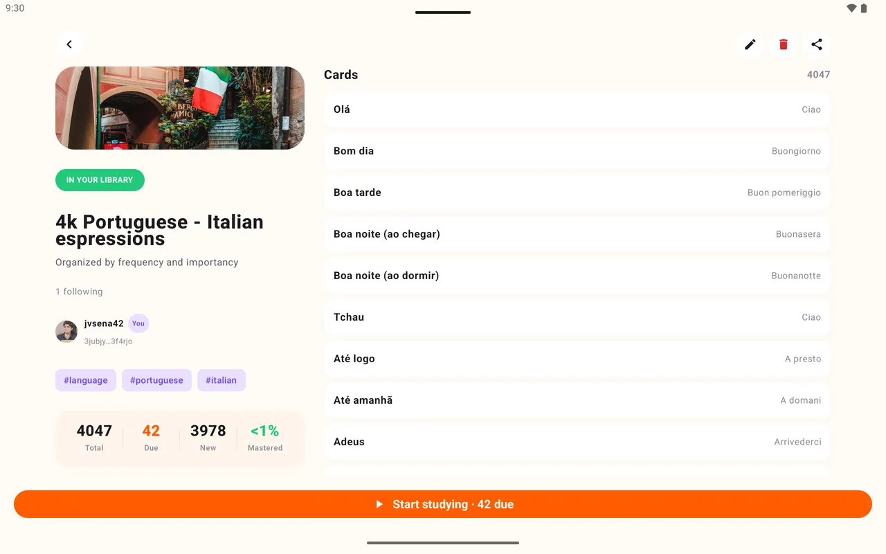
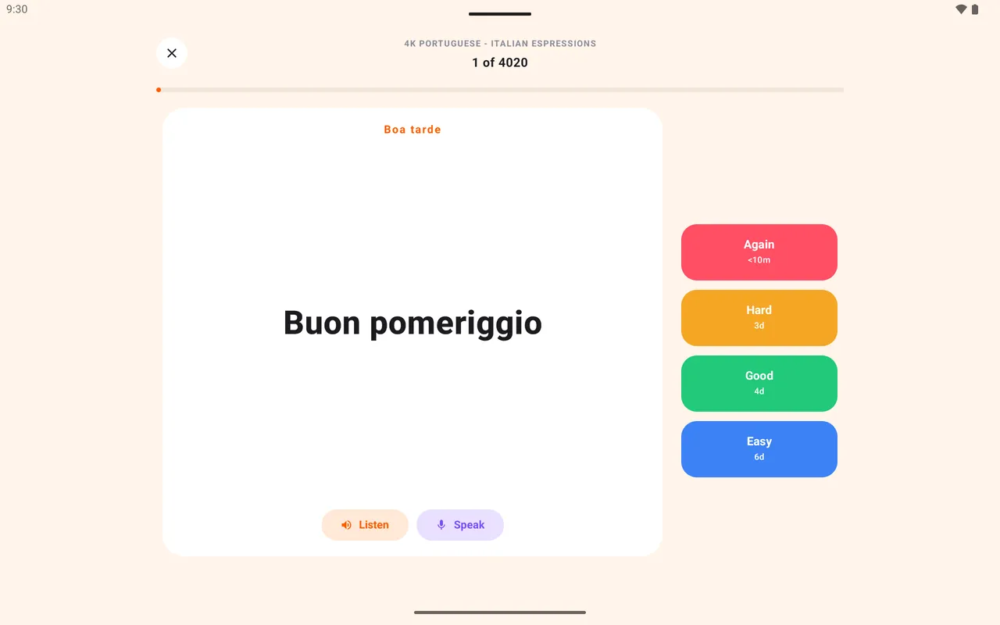

Bilder und Lückentext
Karten zu Anatomie, Histologie und EKG behalten ihre Bilder. Jede Lücke wird zu einer eigenen Karte.
Für Medizinstudierende
Bring deine Anki-Stapel samt Bildern und Lückentext mit, wiederhole zwischen den Vorlesungen und verkürze vor Prüfungen jedes Intervall.
Kostenlos. Keine Werbung. Quelloffen.

Karten zu Anatomie, Histologie und EKG behalten ihre Bilder. Jede Lücke wird zu einer eigenen Karte.
Verkürze Gut und Einfach vor einer Prüfung, und der ganze Stapel zieht an.
Ein KI-Agent kann deine Notizen über die Kommandozeile in einen Stapel verwandeln.
Schick einen Link. Deine Kommilitonen folgen ihm oder klonen sich eine eigene Kopie.
Nochmal, Schwer, Gut und Einfach zeigen jeweils, wann die Karte zurückkommt. Es gibt kein Limit für tägliche Wiederholungen.
| Button | Nächste Wiederholung | Einstellbar |
|---|---|---|
| Nochmal | Unter 10 Minuten | Nein |
| Schwer | 1 Tag | 1 bis 365 Tage |
| Gut | 3 Tage | 1 bis 365 Tage |
| Einfach | 7 Tage | 1 bis 365 Tage |

Bildlastige Karten liest man am besten auf dem Tablet, mit den Bewertungsbuttons direkt neben der Karte.

Ja. Exportiere sie als .apkg mit Medien. Text, Bilder und Lückentext kommen mit, Audio und Lernverlauf nicht.
Nein. Die Intervalle sind pro Button fest, und du stellst sie ein. Wenn du für jahrelanges Behalten auf FSRS setzt, ist Anki da stärker.
Nein. Stapel auf Loopky sind öffentlich. Schreib nie Patientendaten auf eine Karte.
Ja. Keine Werbung und kein Abo.
Ein paar Minuten am Tag reichen.